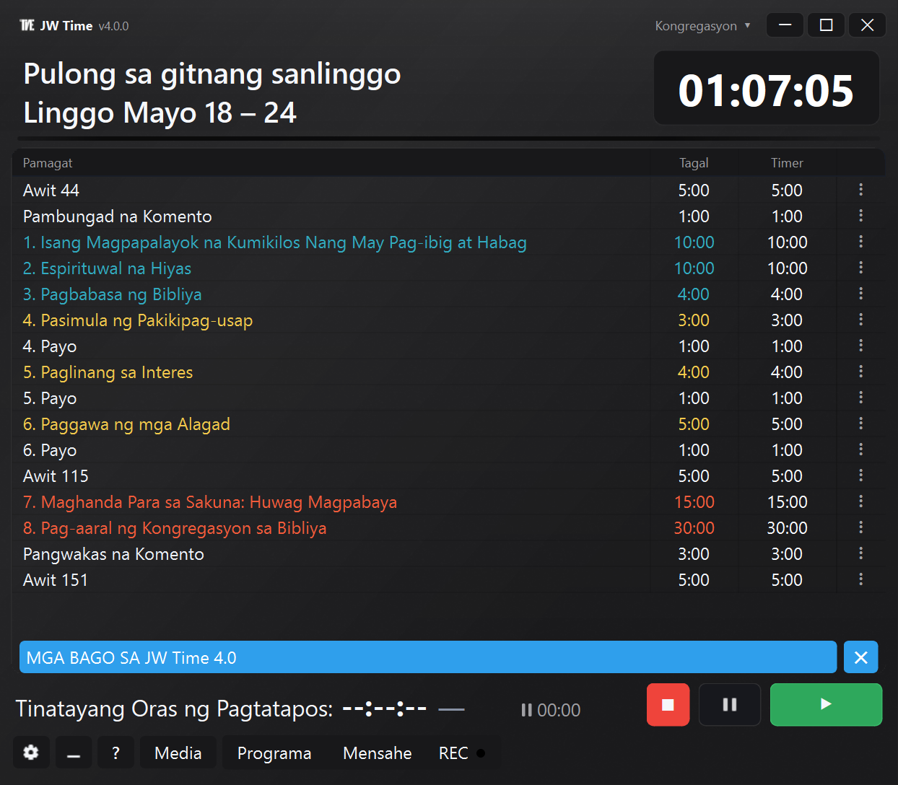
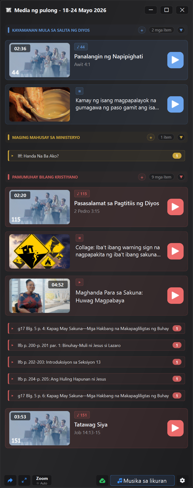

Tingnan ang pinakabagong mga function at pagpapahusay ng JW Time
Pinakabagong bersyon na available sa Store: 4.0.7
Patuloy na pinapahusay ng serye 4.0 ang pamamahala ng programa, Window ng Media, mga profile ng kongregasyon, Monitor Web at pangkalahatang katatagan ng app. Dito makikita ang pinakakapaki-pakinabang na mga bago pagkatapos ng bersyon 4.0.0.
Mga update hanggang bersyon 4.0.7
Bersyon 4.0.7 PINAHUSAY
Ang bagong column na Pagtatapos ay maaaring magpakita ng inaasahang oras ng pagtatapos ng bawat bahagi ng programa.
Lumalabas lang ang banner ng mga bago kapag ang online na komunikasyon ay tungkol sa mas bagong bersyon.
Mas maaasahang naibabalik ang mga profile, backup, window at recording device.
Mas predictable ang mga grupo ng media kapag naglilipat ka ng mga elemento papasok, palabas o sa loob ng mga grupo.
Bersyon 4.0.6 BAGO
Sa Window ng Media, maaari mong payagan ang mga HTTPS URL sa labas ng jw.org at wol.jw.org, kung pinahintulutan sa mga setting.
Kasama sa Test koneksyon ang mas kumpletong mga pagsusuri sa lokal na server, built-in na browser, mga panlabas na URL at mga folder na ginagamit ng media.
Mas mahusay na pinamamahalaan ng pagbabahagi sa Zoom ang mga video na naghihintay kapag nananatiling bukas ang window ng pagpili.
Maaari mong manual na markahan ang isang media bilang nagamit o hindi nagamit mula sa menu ng konteksto.
Bersyon 4.0.5 PINAHUSAY
Kapag nagpapalit ka ng kongregasyon, mas mahusay na sinusunod ng Window ng Media at Pampublikong Screen ang estado na naka-save sa profile.
Mas mahusay na pinamamahalaan ng preview ng mga larawan at PDF ang mga pagbabagong hindi pa nai-save.
Kapag isinara ang Window ng Media, nag-aalok ang JW Time ng mas malinaw na mga pagpipilian kung ano ang gagawin sa aktibong Pampublikong Screen.
Sinisimulan lang ng button na Pagbabahagi sa Zoom ang pagbabahagi kung hindi pa ito aktibo.
Bersyon 4.0.4 PINAHUSAY
Kapag lumampas sa itinakdang oras ang isang bahagi, ipinapakita ng timer ang overtime gamit ang sign na +, halimbawa +0:20.
Mas malinaw na hinahighlight ng button na Susunod ang mga pagkakataong ang susunod na click ay papasok sa awtomatikong pause.
Mas mahusay na pinananatili ng Monitor Web ang napiling mga setting at ginagawang mas malinis ang paggamit sa timer mode o full screen.
Ibinabalik din ng pag-import ng iisang kongregasyon ang posisyon at laki ng window ng timer.
Bersyon 4.0.3 PINAHUSAY
Maaaring direktang palitan ng mga larawan at video ang aktibong nilalaman sa Window ng Media, nang hindi kailangang pindutin muna ang Stop.
Mas mahusay na pinapanatili ng Monitor Web ang napiling setting habang may mga update, migration at pag-save ng mga profile.
Bersyon 4.0.2 PINAHUSAY
Pinahusay ang pag-import ng mga playlist ng JW Library, kasama ang media na naka-save nang walang extension pero may idineklarang uri ng file.
Kapag nasa playlist, mas mahusay na nakikilala ng JW Time ang pambungad na Awit para sa pahayag pangmadla.
Mas mahusay na sinusunod ng mga label at anyong isahan/maramihan sa mga window na konektado sa media ang wika ng app.
Bersyon 4.0.1 PINAHUSAY
Pinahusay ang pagkuha ng opisyal na media ng Bantayan kapag ang linggo ng pag-aaral ay nasa hangganan ng dalawang isyu.
Tinatanggap din ng Window ng Media ang pag-drag ng mga playlist ng JW Library at playlist ng JW Time.
Sa paunang wizard, kapag binago ang wika, agad na naa-update ang taunang teksto sa Pampublikong Screen sa aktuwal na wika.
Bersyon 4.0.0
Integrated na Media, Pampublikong Screen, mga profile ng kongregasyon, Monitor Web na may remote na kontrol, mas flexible na recording at mas kumpletong mga tool para ihanda ang pulong.
Nagdaragdag ang bersyon 4.0.0 ng mga support tool para ihanda at kontrolin ang available na nilalaman, ipakita ito sa Pampublikong Screen at pamahalaan ang timer, media at recording nang may mas kaunting manual na hakbang.
Ang mga function na nakaplano para sa 3.0 ay isinama sa 4.0.0, kasama ang bagong Media system, Pampublikong Screen at mga profile ng kongregasyon. Dahil dito, direktang lumilipat ang history mula 2.1.0 patungong 4.0.0.
Sa ibaba makikita ang pangunahing mga bago, na may konkretong mga halimbawa kung ano ang nagbabago sa aktuwal na paggamit ng app.


Preview ng bagong interface at Window ng Media ng JW Time 4.0.
Sa maikli BAGO
Maaari mong tingnan at ayusin ang mga larawan, video, PDF, URL, Awit at opisyal na nilalaman na available na, sa tulong ng Window ng Media.
Ipakita ang media at visual na nilalaman sa Pampublikong Screen na hiwalay sa Contatempo.
I-personalize ang Screen ng Contatempo gamit ang mga preset, editor, background, kulay, logo, orasan at mga layer.
Gumamit ng magkakahiwalay na profile ng kongregasyon para sa mga screen, window, server, recording, media at layout.
Buksan ang Monitor Web gamit ang QR at, kung pinahintulutan, kontrolin ang timer at iskedyul mula sa browser.
Maghanda ng mas kumpletong mga package at backup para gumana offline o ilipat ang configuration.
Media at paghahanda ng pulong BAGO
Nag-aalok ang Window ng Media ng pansuportang tool para mas madaling ihanda at kontrolin ang available na nilalaman.
Paalala: ang Window ng Media ay isang function para sa teknikal na suporta. Pinapadali nitong ihanda at kontrolin ang available na nilalaman, pero ang praktikal na paggamit ay laging nakadepende sa lokal na mga pangangailangan, sa tagubilin ng kongregasyon at sa mga kaayusan.
Magdagdag ng lokal na file, larawan, video, PDF at URL.
Tingnan ang mga Awit, opisyal na media at nilalamang konektado sa linggo.
Ayusin ang manual na nilalaman sa mga grupo at muling ayusin ang mga elemento ayon sa programa.
Suriin nang maaga kung ano ang available at kung ano ang kulang.
Buksan o ipakita ang isang nilalaman sa Pampublikong Screen nang hindi ito hinahanap sa iba't ibang folder.
Opisyal na media, playlist at mga package BAGO
Makakatulong ang JW Time na ayusin at muling gamitin ang opisyal na nilalamang available na at lokal na nilalaman sa mas maayos na paraan, kahit kailangan mong gumana offline.
I-download at muling gamitin ang opisyal na media na nasa lokal na storage na.
Pamahalaan ang nakalaang cache para sa mga opisyal na Awit, na may mga pagsusuri sa availability.
Mag-import ng mga playlist at iugnay ang materyal na naihanda na.
Gumawa o gumamit ng mga media package na may lokal na file, URL, larawan at opisyal na nilalaman.
Buksan ang Pagsusuri ng Media para makita ang mga kulang na file, offline na nilalaman, problema at lokal na laki.
Kopyahin ang impormasyon ng pagsusuri kapag kailangan mong i-verify o ibahagi ang isang problema.
Mahalagang paalala: ang alternatibong path na ipinakilala sa JW Time 2.1.0 ay para sa mga programa sa gitnang sanlinggo at weekend. Para sa opisyal na media, walang ikalawang server para sa pagkuha. Kung hinaharang ng router, firewall, DNS o content filter ang access ng JW Time sa jw.org o sa mga relihiyosong site, maaaring hindi ma-download ng Window ng Media ang opisyal na media. Magagamit pa rin ang mga file na na-download na, lokal na media at nilalamang manual na idinagdag.
Screen ng Contatempo at Pampublikong Screen BAGO
Pinaghiwalay ang mga display: ang Contatempo ay para sa nangunguna, ang Pampublikong Screen ay para sa bulwagan.
Magsimula sa mga preset na handa na para sa Screen ng Contatempo.
Baguhin ang pagkakaayos, mga layer, kulay, background, logo, orasan at mga text gamit ang editor.
Ipakita ang mga larawan, PDF, video at visual na nilalaman sa Pampublikong Screen.
Panatilihing hiwalay ang timer na nakikita ng nangunguna mula sa nilalamang ipinapakita sa audience.
Mas mahusay na nababawi ang mga window na nasa labas ng screen at ang nabagong mga configuration ng monitor.
Mga kongregasyon, profile at backup BAGO
Iniiwasan ng mga profile ng kongregasyon na muling i-configure ang JW Time kapag ginagamit ang app sa iba't ibang kalagayan.
Panatilihing magkakahiwalay ang wika, tema, sukat ng interface, mga screen at window.
Mag-save ng magkakaibang configuration para sa Server Web, recording, media at layout.
Mag-import, mag-export at mag-duplicate ng mga profile para maghanda ng magkatulad na configuration.
Ilipat ang mga setting sa ibang computer gamit ang mas kumpletong mga backup.
Ang kasalukuyang mga setting ay imi-migrate sa unang profile.
Server Web at remote na kontrol BAGO
Maaaring gamitin ang Server Web para lang ipakita ang programa o, kung pinahintulutan, para kumilos mula sa browser.
Buksan ang Monitor Web mula sa telepono, tablet o ibang computer sa parehong network.
Gamitin ang QR para mas mabilis na maabot ang address ng Server Web.
Subaybayan ang timer, programa at tinatayang oras ng pagtatapos sa real time.
Sa tungkuling Controller, maaari mong simulan, ihinto, lumipat sa susunod na bahagi at baguhin ang mga available na value sa iskedyul.
Protektahan ang Editor, Controller at remote na access gamit ang PIN kapag kailangan.
Recording at audio PINAHUSAY
Mas naiangkop ang recording sa aktuwal na daloy ng pulong, kung saan maaaring kailangan ang mga pause, pagpapatuloy at mabilisang pagsusuri.
Pamahalaan ang pause at pagpapatuloy ng recording sa mas direktang paraan.
Mas mahusay na kontrolin ang naka-configure na mga audio device.
Makita ang kapaki-pakinabang na impormasyon mula sa button na REC at sa mga audio level.
Isama ang recording, media at timer nang hindi nagbubukas ng mga panel na hindi kailangan.
Mga setting, ginabayang unang pagbubukas at interface PINAHUSAY
Muling inayos ang mga setting ayon sa area at tumutulong ang ginabayang unang pagbubukas na i-configure ang mahahalagang bahagi.
I-configure ang wika, mga screen, server, backup at pangunahing mga opsyon sa unang pagbubukas.
Mas madaling hanapin ang tema, sukat ng interface at wika ng programa.
Gumamit ng magkakahiwalay na panel ng setting para sa Media, Zoom, Server Web, Mga Recording at Backup.
Tingnan ang window na Mga Bago sa loob ng app kahit pagkatapos ng unang pagbubukas.
Katatagan at mga pag-aayos NAAYOS
Maraming pag-aayos ang tungkol sa praktikal na mga sitwasyong maaaring mangyari sa lingguhang paggamit.
Mas mahusay na natatandaan ang mga window at mas maaasahan ang pagbawi pagkatapos ng pagbabago ng monitor.
Mas maayos na pagsasara ng app, kahit may bukas na server, media at mga screen.
Mas matatag na pamamahala ng Pampublikong Screen, Server Web, media at recording.
Pinahusay ang mga download, media cache, lokal na path at pansamantalang file.
Mas magkakatugma ang mga estado ng app habang nagpapalit ng linggo, wika, kongregasyon o programa.
Bersyon 2.1.0
SOLUSYON PARA SA LAHAT NG KONGREGASYONG HINDI MAKAPAG-DOWNLOAD NG MGA PROGRAMA.
Laging naaabot ang mga programa, na may mga bagong opsyon sa download.
⚠️ May problema sa Server Web?
BABALA: Bago magpatuloy, gumawa ng backup ng app dahil kakailanganin itong i-uninstall.
Maaaring makaranas ng problema ang ilang user na nag-a-update mula sa mga nakaraang bersyon sa function na Server Web. Kung hindi tumutugon ang Server Web, sundin ang mga hakbang na ito para linisin ang mga rule ng firewall:
Solusyon (gagawin nang isang beses lang):
Pindutin ang Start at hanapin: "Windows Defender Firewall with Advanced Security". Buksan ito.
Sa kaliwa, i-click ang Mga panuntunan para sa papasok na koneksyon.
Sa listahan, hanapin ang mga entry na naglalaman ng JWTime.
Tanggalin ang lahat ng ito (i-click gamit ang kanang button sa panuntunan → Tanggalin).
Pagkatapos tanggalin ang mga panuntunan, i-install muli ang JWTime at i-reload ang mga setting. Pagkatapos, subukang gamitin ang Monitor WEB.
Kapag nagawa na ang operasyong ito, hindi na kailangang ulitin pa ito.
Awtomatikong alternatibong download BAGO
Karagdagang paraan para mag-download ng mga lingguhang programa o mga programa sa pulong sa weekend kapag mahigpit ang router o firewall.
Sa tab na Mga Koneksyon, maaari mo ring piliting i-download ang mga programa mula sa isang partikular na server.
Tandaan: 12 linggo lang ang nasa memorya ng pangalawang server.
Salamat kay Mauro sa mahalagang suporta sa pagsusuri ng mga problema sa connectivity sa WOL na sanhi ng mga partikular na configuration ng router.
Pinahusay na Monitor Web BAGO
Pagpapakita ng mga Awit at pagpapadala ng mga mensahe sa screen sa bahagyang mode o buong screen.
Awtomatikong muling pagkonekta kapag nadiskonekta at screen saver para protektahan ang nakakonektang display.
Button na Pause/Resume sa recording PINAHUSAY
Maaari mo na ngayong i-pause ang recording at ipagpatuloy ito sa ibang pagkakataon habang pinapanatili ang isang file lang. Mainam ito para hindi isama ang partikular na mga sandali, gaya ng mga panalangin, o para pamahalaan ang hindi inaasahang mga pagkaantala.
Pamamahala ng Mga Screen at Window PINAHUSAY
Pinahusay ang pamamahala ng mga window na buong screen (Contatempo at Simula ng Pulong). Pinipigilan na ngayon ng system ang hindi sinasadyang overlap sa pangunahing interface, kahit biglang madiskonekta ang external monitor, para laging manatili ang buong kontrol sa app.
Pinahusay na diagnostics PINAHUSAY
Pagsubok ng koneksyon na may mas maraming kapaki-pakinabang na data at mas malinaw na mga mensahe ng error kapag nabigo ang pagkuha ng mga online na programa.
Iba pang mga pagpapahusay at pag-aayos ng bug
Pangkalahatang optimization, pagpapahusay sa itsura at maliliit na pag-aayos para sa stability at kalinawan.
Bersyon 2.0.0
Isang ganap na binagong bersyon na may advanced na mga kakayahan para sa pamamahala ng mga pulong.
⚠️ Payo sa Backup
Sa bersyong ito, maraming bagong opsyon ang idinadagdag na wala sa lumang mga backup: ang bagong format ng pag-save ay .jwtimesettings, pero maaari mo pa ring i-load ang lumang mga backup file sa format na .json. Pagkatapos i-configure ang mga bagong setting ng bersyon 2.0, inirerekomenda ring gumawa ng bagong backup sa format na .jwtimesettings, para mai-save din ang lahat ng bagong opsyon.
Idinagdag ang Wikang Portuguese (Brazil) BAGO
Idinagdag ang wikang Portuguese (Brazil), na mapipili mula sa menu ng Mga Setting.
Pagre-record ng mga Pulong BAGO
Ipinapakilala ng bersyon 2.0 ang bagong function para sa pagre-record ng audio ng mga pulong.
Saan ito makikita:
Window ng Mga Setting: bagong tab "Recording"
Pangunahing window: bagong button REC
Pangunahing mga kakayahan:
Pagpili ng destination folder
Pagsubok ng recording
Pag-adjust ng volume ng mikropono at audio PC
Awtomatikong "ducking" function
Statistics ng espasyo at file
Manual na kontrol gamit ang REC button
Backup para sa OFFLINE Mode BAGO
Awtomatikong backup ng mga lingguhang programa:
Hanggang 12 linggo ang awtomatikong nai-store
Pagkuha ng programa kahit walang koneksyon
Gumagana sa background
Mga backup na na-export para sa OFFLINE na paggamit:
Manual na pag-export ng mga package ng programa
Maililipat sa ibang PC na walang internet
Mainam para sa mga PC sa hall na hindi konektado sa network
Pamamahala ng maraming wika:
Magkakahiwalay na backup para sa bawat wika (IT, EN, ES, DE, pt_BR)
Walang overlap sa pagitan ng magkakaibang wika
Koneksyon, Web Server at Log PINAHUSAY
Advanced na pagsubok ng koneksyon:
Sinusuri ang koneksyon sa internet at mga kinakailangang site
Sinusuri ang HTTPS at mga certificate
Sinusuri ang system proxy
Sinusuri ang pag-sync ng oras
Test sa pagsusulat sa mga folder (log, cache, backup)
Pinahusay na mga log:
Direktang pagbukas ng log folder mula sa mga setting
Mas malinaw at mas kapaki-pakinabang na mga mensahe
Pahina ng Web server:
Suporta para sa maliwanag/madilim na tema
Pag-save ng mga Manual na Listahan BAGO
Kapag pinindot mo ang pindutang "Manual" sa tab na Mga Programa, mayroon ka na ngayong dalawang bagong pindutan:
"I-save ang manual na listahan" - Sine-save ang iyong custom na listahan
"I-load ang manual na listahan" - Binubuksan muli ang isang naka-save na listahan
Mga benepisyo:
Gumawa ng ganap na custom na mga listahan
I-save gamit ang isang pangalang madaling makilala
Buksan muli nang hindi kailangang isulat ulit
Nawawala ang mga button kapag bumalik ka sa Pulong sa gitnang sanlinggo/Pulong sa weekend
Bagong Maliwanag na Tema PINAHUSAY
Ipinakilala ang bagong maliwanag na tema, na ganap na idinagdag sa bersyon 2.0.
Mga pagpapahusay sa maliwanag na tema:
Mas madaling basahing mga kulay para sa PAMUMUHAY BILANG KRISTIYANO at mga Pagsasanay
Mas kitang-kita ang pagpili ng mga cell
Inayos ang mga kulay ng text sa table at active display
Inayos ang problema sa popup ng Awit ng tagapagsalita
Pangkalahatang interface:
Mga pagpapahusay para sa higit na kalinawan
Mas pare-pareho at magkakatugmang disenyo
Bersyon 1.8.4
Mahalagang Pag-update
Adaptive na Pag-aaral sa Bantayan
Awtomatikong ina-adjust ng app ang tagal ng Pag-aaral sa Bantayan para makatulong na matapos sa nakatakdang oras ng pulong. Ina-activate ang function na ito mula sa Mga Pangkalahatang Setting.
Indicator ng Paglihis sa Oras
Real-time na signaling system na nagpapakita kung ang pulong ay:
Late (Pula): Mahigit 1 minuto nang late
Late (Dilaw): Hanggang 1 minuto na late
Maaga (Berde): Mas mabilis kaysa sa inaasahan ang takbo ng pulong
Eksaktong nasa oras: Walang ipinapakitang kulay
Awtomatikong nag-a-update ang indicator sa real time habang nagpapatuloy ang pulong.
Mga Teknikal na Pagpapahusay
Na-optimize ang synchronization ng mga timer para sa mas mataas na katumpakan
Pinahusay ang stability ng Screen ng Contatempo sa mga external monitor
Maliliit na graphical correction sa interface
Na-optimize ang pangkalahatang performance
Bersyon 1.8.0
Function na Pause
Function na Pause
Ipinakilala ang function na Pause (ZZ) na nagpa-pause sa kasalukuyang timer habang ipinapakita ang indicator na ⏸. Sinusubaybayan ng app ang "Kabuuang oras ng pause/pagpapalit ng tagapagsalita".
Maaaring:
Ipagpatuloy: Nagpapatuloy mula sa puntong nahinto
I-reset: Nire-reset ang naipong teknikal na oras
Adaptive na Pag-aaral ng Kongregasyon sa Bibliya
Unang bersyon ng adaptive function, inilapat sa Pag-aaral ng Kongregasyon sa Bibliya. Awtomatikong ina-adjust ng app ang tagal para mapanatili ang inaasahang oras ng pagtatapos.
Mga Bug Fix
Inayos ang mga problema sa synchronization sa pagitan ng pangunahing screen at external monitor
Pinahusay ang pangkalahatang stability ng application
Bersyon 1.1.6
Update sa Pagkakatugma
Update sa Mga Iskedyul
Inayos ang mga problemang may kaugnayan sa table ng contatempo, ayon sa mga pagbabagong ginawa sa opisyal na site na jw.org.
Na-update ang synchronization sa bagong format ng mga iskedyul
Compatibility sa pinakabagong mga pagbabago sa mga programa ng mga pulong